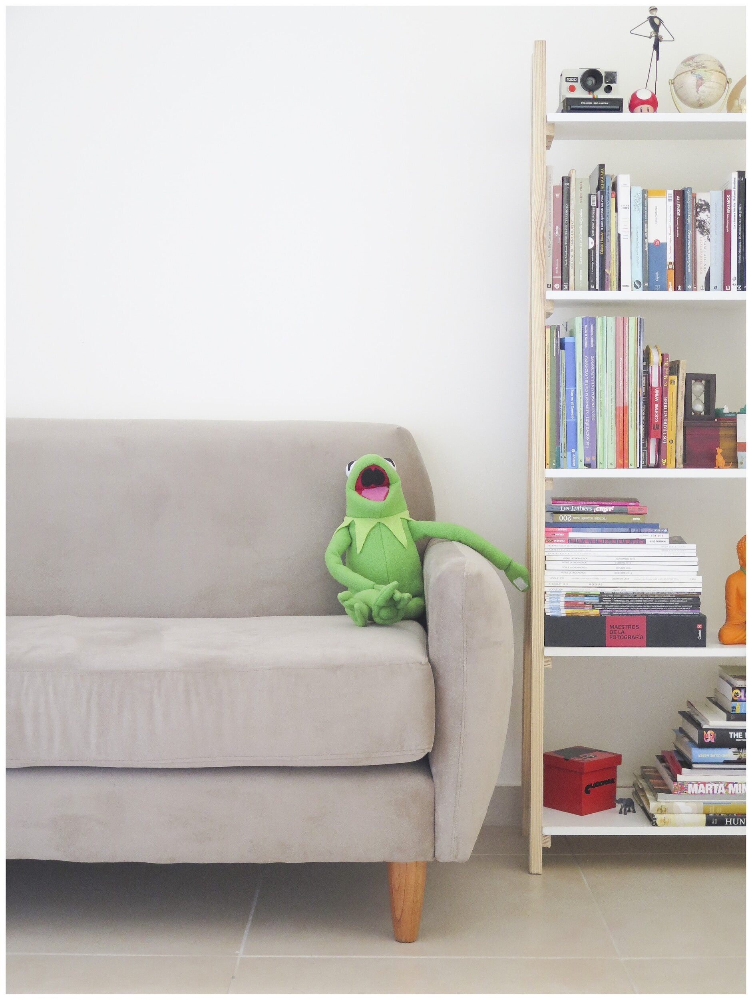

5 Practical Steps for Parents to Teach Kids Organizing Skills
As a caretaker, you play a pivotal role in shaping a child's development and preparing them for success in various aspects of life. One essential life skill that can be taught from an early age is organizing. Teaching kids organizing skills not only helps them maintain tidy spaces but also equips them with valuable habits for the future. By implementing these five practical steps today, you can empower children to become more organized and responsible individuals.
Lead by Example: Children learn best through observation and imitation. As a caretaker, you can be a positive role model by demonstrating good organizing habits. Show them how you keep your own space tidy, create schedules, and organize belongings. Involve them in household organization tasks, such as cleaning up after playtime or sorting laundry. When kids see you valuing organization, they are more likely to follow suit and adopt these habits themselves.
Learn about our process
Designate Organizing Zones::
Create specific organizing zones in the child's living space. For instance, establish a play area, study corner, and storage spaces for toys and other belongings. Label shelves and bins to help kids identify where items belong. Having designated spaces makes it easier for children to keep their things organized and reduces clutter in the common areas of the house.
Make Organizing Fun::
Organizing doesn't have to be a dull and tedious task. Turn it into an enjoyable activity by incorporating games and creative elements. Use colorful bins or containers for sorting toys, and challenge kids to tidy up within a set time, rewarding them with a small treat or special activity afterward. Making organizing fun will motivate children to participate actively and view it as an enjoyable part of their routine.
Develop Daily Routines: Establishing consistent daily routines is an effective way to teach organization skills. Create a schedule that includes time for play, study, chores, and rest. Encourage kids to stick to their routines, setting aside time each day for tidying their space, completing homework, and organizing their school materials. Consistency will help these habits become ingrained and second nature over time.
Use Checklists and Planners: Introduce children to checklists and planners to help them stay organized and manage their tasks effectively. Depending on their age, you can use simple picture-based checklists or more detailed planners. Encourage them to create lists for daily chores, weekly goals, or upcoming events. By using checklists and planners, kids can visually track their progress, experience a sense of accomplishment, and develop essential time management skills.
Encourage Donation and Decluttering: Teaching kids the importance of decluttering can go hand in hand with organizing skills. Regularly go through toys, clothes, and other items with them, and discuss the significance of letting go of things they no longer need or use. Encourage them to donate gently-used items to those in need. This practice not only helps keep their spaces organized but also instills a sense of empathy and compassion.
In conclusion, teaching kids organizing skills is a valuable gift that will benefit them throughout their lives. By leading by example, creating designated organizing zones, making organizing enjoyable, establishing routines, and introducing checklists and planners, caretakers can guide children towards becoming more organized and responsible individuals. These skills will not only help them maintain tidy spaces but also instill valuable habits that contribute to their success in academics, relationships, and overall well-being. By starting to implement these practical steps today, caretakers can set children on a path towards an organized and fulfilling future.
our services